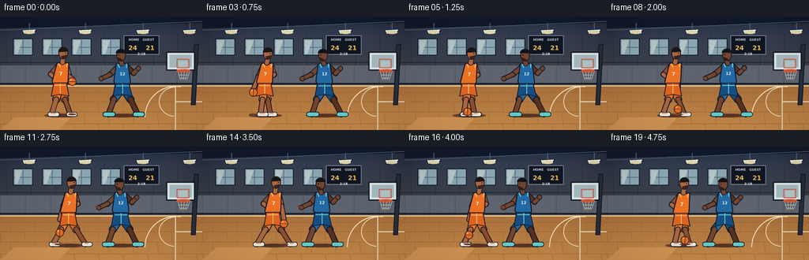
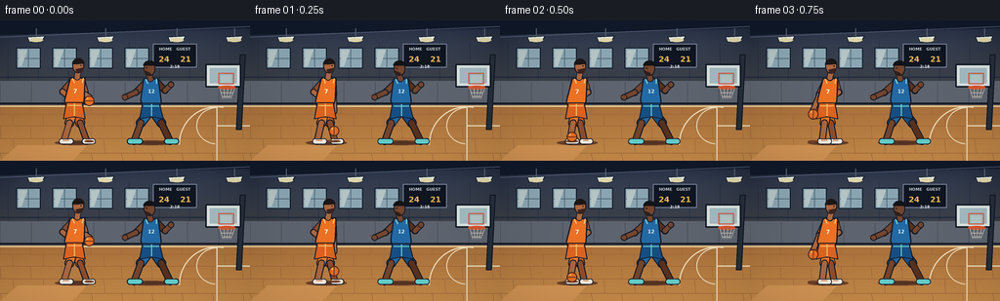
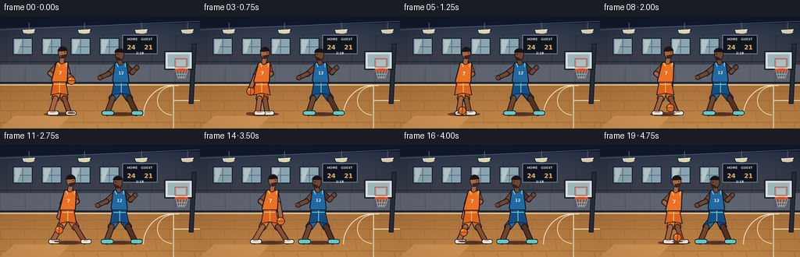
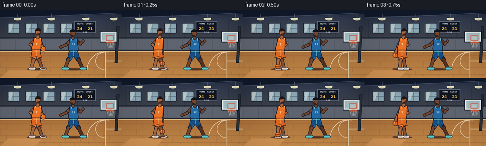

CODING AGENTS AS PIXEL WORLD MODELS
traex/GPT-5.6-Sol · instance_preservation_0035
点击播放 · 原生 RGB 像素
逐轮保存的候选
回放视频、检查图与代码变化。
每份候选均可单独播放。实际图片检查记录在下方工具轨迹中。
候选 01播放与检查图
点击播放 · 原生 RGB 像素


展开代码变化
--- 上一保存版本
+++ 本次保存版本
@@ -0,0 +1,258 @@
+from pathlib import Path
+import math, json
+import numpy as np
+from PIL import Image, ImageDraw, ImageFont, ImageFilter
+import artifact_io
+
+CASE_DIR = Path(__file__).resolve().parent
+spec = json.loads((CASE_DIR / 'task_spec.json').read_text())
+W, H, N, FPS = spec['width'], spec['height'], spec['frames'], spec['fps']
+S = 4
+SW, SH = W*S, H*S
+
+def sc(v): return int(round(v*S))
+def pts(seq): return [(sc(x), sc(y)) for x,y in seq]
+def box(b): return tuple(sc(v) for v in b)
+
+def ellipse(d, b, fill, outline=None, width=1):
+ d.ellipse(box(b), fill=fill, outline=outline, width=max(1,sc(width)))
+def polygon(d, p, fill, outline=None, width=1):
+ d.polygon(pts(p), fill=fill)
+ if outline:
+ d.line(pts(p+[p[0]]), fill=outline, width=max(1,sc(width)), joint='curve')
+def line(d, p, fill, width=1, joint='curve'):
+ d.line(pts(p), fill=fill, width=max(1,sc(width)), joint=joint)
+def text(d, xy, s, font, fill, anchor=None):
+ d.text((sc(xy[0]),sc(xy[1])), s, font=font, fill=fill, anchor=anchor)
+
+def font(sz, bold=False):
+ fp = '/usr/share/fonts/truetype/dejavu/DejaVuSans-Bold.ttf' if bold else '/usr/share/fonts/truetype/dejavu/DejaVuSans.ttf'
+ return ImageFont.truetype(fp, sc(sz))
+
+F4B=font(4,True); F5=font(5,True); F6=font(6,True); F8=font(8,True)
+
+def capsule(d, a, b, color, width, outline='#141a27', ow=1.2):
+ # outlined rounded limb segment
+ line(d,[a,b],outline,width+2*ow)
+ ellipse(d,(a[0]-(width+2*ow)/2,a[1]-(width+2*ow)/2,a[0]+(width+2*ow)/2,a[1]+(width+2*ow)/2),outline)
+ ellipse(d,(b[0]-(width+2*ow)/2,b[1]-(width+2*ow)/2,b[0]+(width+2*ow)/2,b[1]+(width+2*ow)/2),outline)
+ line(d,[a,b],color,width)
+ ellipse(d,(a[0]-width/2,a[1]-width/2,a[0]+width/2,a[1]+width/2),color)
+ ellipse(d,(b[0]-width/2,b[1]-width/2,b[0]+width/2,b[1]+width/2),color)
+
+def court_background(k):
+ # soft lit gym wall gradient
+ yy=np.arange(SH)[:,None]
+ xx=np.arange(SW)[None,:]
+ base=np.zeros((SH,SW,3),dtype=np.float32)
+ wall_top=np.array([26,35,55.],dtype=np.float32)
+ wall_bot=np.array([69,71,73.],dtype=np.float32)
+ blend=np.clip(yy/(90*S),0,1)[...,None]
+ base[:]=wall_top+(wall_bot-wall_top)*blend
+ # pools of overhead light, stable throughout the shot
+ for cx in (50,130,210):
+ glow=np.exp(-(((xx-cx*S)/(54*S))**2+((yy-22*S)/(35*S))**2))*20
+ base += glow[...,None]*np.array([0.65,0.72,0.85])[None,None,:]
+ img=Image.fromarray(np.uint8(np.clip(base,0,255)),'RGB')
+ d=ImageDraw.Draw(img)
+ # upper steel beams and ceiling lamps
+ polygon(d,[(0,0),(256,0),(256,8),(0,15)],'#111a2b')
+ line(d,[(0,17),(256,6)],'#536078',1)
+ for x in (37,108,181,240):
+ line(d,[(x,8),(x,18)],'#5e687b',1)
+ polygon(d,[(x-9,17),(x+9,16),(x+6,21),(x-7,22)],'#e9f1e7','#101724',.7)
+ ellipse(d,(x-7,18,x+7,22),'#e6dcae')
+ # tall wall panels
+ for x in range(8,257,31):
+ line(d,[(x,22),(x,86)],'#222c40',.55)
+ line(d,[(0,58),(256,58)],'#1c273b',1)
+ # windows
+ for x in (17,54,91,128):
+ polygon(d,[(x,28),(x+24,28),(x+24,49),(x,49)],'#8da8b5','#101827',1)
+ line(d,[(x+12,28),(x+12,49)],'#4b6071',.65)
+ line(d,[(x,39),(x+24,39)],'#4b6071',.65)
+ polygon(d,[(x+2,30),(x+11,30),(x+5,47),(x+2,47)],'#b8c8c8')
+ # scoreboard, establishes the basketball setting
+ polygon(d,[(157,24),(201,24),(201,48),(157,48)],'#101622','#79849a',1)
+ text(d,(179,27),'HOME GUEST',F4B,'#ccd4d9','ma')
+ text(d,(168,35),'24',F8,'#f4bf55','ma'); text(d,(190,35),'21',F8,'#f4bf55','ma')
+ text(d,(179,45),'2:18',F4B,'#e8edf0','ma')
+ # lower padding/wall
+ polygon(d,[(0,62),(256,62),(256,88),(0,88)],'#5f6570')
+ for x in range(0,256,32):
+ line(d,[(x,63),(x,87)],'#4a515c',.65)
+ line(d,[(0,85),(256,85)],'#171d28',2)
+ # floor gradient
+ for y in range(87*S,SH):
+ yf=y/S
+ u=(yf-87)/(H-87)
+ c=(int(169+33*u),int(113+29*u),int(60+15*u))
+ ImageDraw.Draw(img).line([(0,y),(SW,y)],fill=c,width=1)
+ d=ImageDraw.Draw(img)
+ # parquet seams and highlights
+ for y in (96,108,121,136): line(d,[(0,y),(256,y)],'#9e6237',.45)
+ for row,y in enumerate((87,96,108,121,136)):
+ y2=(96,108,121,136,144)[row]
+ for x in range((-18 if row%2 else 0),270,31):
+ line(d,[(x,y),(x+2*(y-87)/57,y2)],'#9f663e',.42)
+ # sideline and paint/three point arc
+ line(d,[(0,88),(256,88)],'#f3d9a2',1.2)
+ line(d,[(222,89),(222,144)],'#ede0bd',1.25)
+ line(d,[(222,108),(256,108)],'#ede0bd',1.25)
+ # free throw semicircle and 3-point arc behind players
+ # use scaled ImageDraw arcs
+ d.arc(box((183,88,261,167)),180,280,fill='#f2dfbc',width=sc(1.2))
+ d.arc(box((201,89,243,127)),95,270,fill='#f2dfbc',width=sc(1.0))
+ # small foreground gloss
+ polygon(d,[(18,128),(89,128),(74,144),(0,144)],'#d59655')
+ # basket support, backboard, rim
+ polygon(d,[(246,35),(251,35),(247,112),(242,112)],'#26303c','#111723',1)
+ polygon(d,[(211,45),(246,45),(246,68),(211,68)],'#d7e2e3','#111722',1.5)
+ polygon(d,[(214,48),(243,48),(243,65),(214,65)],'#a5bdc3','#f0f3e8',.8)
+ polygon(d,[(224,54),(239,54),(239,65),(224,65)],None if False else '#a0b5b9','#d9523d',1)
+ # make inner backboard panel transparent-looking again
+ polygon(d,[(226,56),(237,56),(237,64),(226,64)],'#b7c8c8')
+ line(d,[(224,68),(240,68)],'#d75531',2.1)
+ ellipse(d,(223,66.8,241,70.7),None,'#dc5a2f',1.5)
+ # net
+ for x1,x2 in ((225,228),(229,230),(233,232),(237,234),(240,236)):
+ line(d,[(x1,70),(x2,80)],'#e9e2ce',.55)
+ line(d,[(226,74),(238,74)],'#e9e2ce',.45); line(d,[(228,78),(236,78)],'#e9e2ce',.45)
+ return img
+
+def draw_shadow(d,x,y,rx,alpha_col='#6d412a'):
+ ellipse(d,(x-rx,y-2,x+rx,y+3),alpha_col)
+ ellipse(d,(x-rx*.65,y-1,x+rx*.65,y+2),'#563424')
+
+def draw_player_orange(d,t,bx,by):
+ # attacking man, warm orange uniform, moves steadily toward the basket
+ x=76+18*t
+ stride=math.sin(2*math.pi*(t*1.05)+.3)
+ bob=.7*math.sin(2*math.pi*t*1.1)
+ lean=3.0
+ skin='#8f4f2e'; skin_hi='#ad6841'; outline='#171924'
+ hip=(x,89+bob); neck=(x+lean,58+bob); head=(x+4.1,47+bob)
+ kneeL=(x-6+3.5*stride,105); footL=(x-13+8*stride,124)
+ kneeR=(x+7-3.5*stride,105); footR=(x+15-8*stride,124)
+ draw_shadow(d,x+1,125,21)
+ # rear leg and front leg: shorts to knees, bare calves, bright shoes
+ capsule(d,hip,kneeR,'#d96b25',8,outline,1)
+ capsule(d,kneeR,footR,skin,5.1,outline,1)
+ capsule(d,hip,kneeL,'#f07a28',8,outline,1)
+ capsule(d,kneeL,footL,skin_hi,5.2,outline,1)
+ # shoes
+ capsule(d,(footR[0]-2,footR[1]),(footR[0]+6,footR[1]),'#f3eee2',4.5,outline,.8)
+ capsule(d,(footL[0]-2,footL[1]),(footL[0]+7,footL[1]),'#f3eee2',4.5,outline,.8)
+ line(d,[(footL[0]-1,footL[1]-1),(footL[0]+5,footL[1]-1)],'#de642b',.7)
+ line(d,[(footR[0]-1,footR[1]-1),(footR[0]+4,footR[1]-1)],'#de642b',.7)
+ # arm reaching down to the currently dribbled ball; hand cannot follow below knee
+ shoulder_dr=(x+lean+(5 if bx>x else -5),63+bob)
+ elbow=((shoulder_dr[0]+bx)/2,76+bob)
+ hand=(bx, min(93+bob,by-4))
+ capsule(d,shoulder_dr,elbow,skin_hi,5.2,outline,1)
+ capsule(d,elbow,hand,skin_hi,4.5,outline,1)
+ # off arm bent up and in front as protection
+ side=-1 if bx>x else 1
+ sh2=(x+lean+side*6,63+bob); el2=(x+side*12,73+bob); ha2=(x+side*5,79+bob)
+ capsule(d,sh2,el2,skin,5.1,outline,1); capsule(d,el2,ha2,skin_hi,4.5,outline,1)
+ # jersey torso and shorts
+ polygon(d,[(x-7+lean,59+bob),(x+8+lean,59+bob),(x+10,82+bob),(x+7,90+bob),(x-8,90+bob),(x-10,82+bob)],'#ed7225',outline,1.2)
+ polygon(d,[(x-8,84+bob),(x+8,84+bob),(x+11,101),(x+1,99),(x-1,99),(x-11,101)],'#df6421',outline,1.1)
+ line(d,[(x,85+bob),(x,98)],'#f8c56b',1)
+ line(d,[(x-7,87+bob),(x+7,87+bob)],'#f8c56b',1)
+ # neck and head
+ capsule(d,(x+lean,58+bob),(x+3.8,54+bob),skin_hi,5,outline,.8)
+ ellipse(d,(head[0]-6,head[1]-8,head[0]+6,head[1]+7),skin_hi,outline,1.1)
+ # cropped black hair and beard, face looking right
+ d.pieslice(box((head[0]-6.3,head[1]-8.5,head[0]+6.3,head[1]+4)),180,354,fill='#1c1718')
+ polygon(d,[(head[0]-3,head[1]+3),(head[0]+6,head[1]+1),(head[0]+4,head[1]+6),(head[0]-1,head[1]+7)],'#3b2421')
+ ellipse(d,(head[0]+2.2,head[1]-1.5,head[0]+3.5,head[1]-.2),'#181820')
+ # jersey trim and number
+ line(d,[(x-5+lean,59+bob),(x-3+lean,64+bob)],'#ffd27b',1)
+ line(d,[(x+6+lean,59+bob),(x+5+lean,64+bob)],'#ffd27b',1)
+ text(d,(x+1,69+bob),'7',F6,'#fff1cf','ma')
+ return x
+
+def draw_player_blue(d,t):
+ # defender in a recognizable low, wide stance
+ x=155-5.5*t+1.2*math.sin(2*math.pi*t*.55)
+ sway=math.sin(2*math.pi*t*.75)
+ bob=.8*math.sin(2*math.pi*t*.75+1)
+ skin='#5a321f'; skin_hi='#75462e'; outline='#141925'
+ hip=(x,90+bob); head=(x-2,49+bob)
+ kneeL=(x-11+2*sway,105); footL=(x-18+3*sway,124)
+ kneeR=(x+10+2*sway,105); footR=(x+19+3*sway,124)
+ draw_shadow(d,x,125,24)
+ capsule(d,hip,kneeR,'#184f84',8,outline,1); capsule(d,kneeR,footR,skin,5.4,outline,1)
+ capsule(d,hip,kneeL,'#236ba5',8,outline,1); capsule(d,kneeL,footL,skin_hi,5.4,outline,1)
+ capsule(d,(footR[0]-3,124),(footR[0]+6,124),'#66d2cf',4.7,outline,.8)
+ capsule(d,(footL[0]-4,124),(footL[0]+6,124),'#66d2cf',4.7,outline,.8)
+ # arms spread toward attacker and passing lane, behind jersey
+ shL=(x-7,64+bob); elL=(x-16-2*sway,73+bob); haL=(x-27-2*sway,78+bob)
+ shR=(x+7,64+bob); elR=(x+14,71+bob); haR=(x+20,65+bob)
+ capsule(d,shL,elL,skin_hi,5.2,outline,1); capsule(d,elL,haL,skin_hi,4.6,outline,1)
+ capsule(d,shR,elR,skin,5.2,outline,1); capsule(d,elR,haR,skin_hi,4.6,outline,1)
+ # open hands/fingers
+ ellipse(d,(haL[0]-3,haL[1]-3,haL[0]+3,haL[1]+3),skin_hi,outline,.7)
+ line(d,[(haL[0]-2,haL[1]),(haL[0]-5,haL[1]-2)],skin_hi,1)
+ ellipse(d,(haR[0]-3,haR[1]-3,haR[0]+3,haR[1]+3),skin_hi,outline,.7)
+ # blue jersey and shorts
+ polygon(d,[(x-8,59+bob),(x+7,59+bob),(x+10,82+bob),(x+8,90+bob),(x-8,90+bob),(x-11,81+bob)],'#236aa5',outline,1.2)
+ polygon(d,[(x-9,84+bob),(x+8,84+bob),(x+12,101),(x+1,99),(x-1,99),(x-12,101)],'#174f84',outline,1.1)
+ line(d,[(x,85+bob),(x,98)],'#73d6d1',1)
+ line(d,[(x-8,87+bob),(x+8,87+bob)],'#73d6d1',1)
+ # neck/head with short textured hair, looking left
+ capsule(d,(x-1,59+bob),(x-2,55+bob),skin_hi,5,outline,.8)
+ ellipse(d,(head[0]-6,head[1]-8,head[0]+6,head[1]+7),skin_hi,outline,1.1)
+ d.pieslice(box((head[0]-6.4,head[1]-8.7,head[0]+6.4,head[1]+2)),181,358,fill='#121418')
+ polygon(d,[(head[0]-6,head[1]+1),(head[0]+1,head[1]+4),(head[0]+2,head[1]+7),(head[0]-4,head[1]+6)],'#30201c')
+ ellipse(d,(head[0]-3.5,head[1]-1.6,head[0]-2.2,head[1]-.3),'#11131a')
+ # contrasting shoulder piping, number
+ line(d,[(x-6,59+bob),(x-4,64+bob)],'#8ce0d6',1)
+ line(d,[(x+5,59+bob),(x+5,64+bob)],'#8ce0d6',1)
+ text(d,(x,69+bob),'12',F5,'#e9f7ec','ma')
+
+def draw_ball(d,bx,by,spin):
+ # slight floor contact shadow grows as the ball descends
+ clos=max(0,min(1,(by-82)/39))
+ ellipse(d,(bx-5-2*clos,123,bx+5+2*clos,125),'#70412a')
+ r=5.3
+ ellipse(d,(bx-r,by-r,bx+r,by+r),'#e66f27','#271c19',1.1)
+ # basketball seams rotate continuously while maintaining one ball instance
+ a=spin
+ x1=bx+r*math.cos(a); y1=by+r*math.sin(a)
+ x2=bx-r*math.cos(a); y2=by-r*math.sin(a)
+ line(d,[(x1,y1),(x2,y2)],'#5b2819',.8)
+ d.arc(box((bx-r,by-r,bx+r,by+r)),int(math.degrees(a)+20),int(math.degrees(a)+170),fill='#5b2819',width=sc(.7))
+ d.arc(box((bx-r,by-r,bx+r,by+r)),int(math.degrees(a)+200),int(math.degrees(a)+350),fill='#5b2819',width=sc(.7))
+ ellipse(d,(bx-2.9,by-3.5,bx-.8,by-1.4),'#f6aa55')
+
+frames=[]
+for i in range(N):
+ t=i/(N-1)
+ sec=i/FPS
+ img=court_background(i)
+ d=ImageDraw.Draw(img)
+ # Ball cycles from one hand to floor to the opposite hand at a readable tempo.
+ theta=math.pi*1.18*sec
+ attack_x=76+18*t
+ bx=attack_x+15.2*math.cos(theta)
+ by=82.5+38.5*abs(math.sin(theta))
+ # far defender first, then attacker; ball is always drawn foremost
+ draw_player_blue(d,t)
+ draw_player_orange(d,t,bx,by)
+ draw_ball(d,bx,by,theta*1.7)
+ # cinematic edge treatment and subtle grain
+ arr=np.asarray(img).astype(np.float32)
+ y,x=np.mgrid[0:SH,0:SW]
+ vign=1-0.12*np.clip(((x-SW/2)/(SW*.72))**2+((y-SH/2)/(SH*.72))**2,0,1)
+ arr*=vign[...,None]
+ rng=np.random.default_rng(2027+i)
+ arr+=rng.normal(0,0.75,arr.shape[:2])[...,None]
+ img=Image.fromarray(np.uint8(np.clip(arr,0,255)))
+ img=img.resize((W,H),Image.Resampling.LANCZOS)
+ frames.append(np.asarray(img,dtype=np.uint8))
+
+frames=np.stack(frames,axis=0)
+artifact_io.save(frames, CASE_DIR)
+print(f'Saved {len(frames)} RGB frames at {W}x{H}, {FPS:g} fps')
候选 02播放与检查图
点击播放 · 原生 RGB 像素


展开代码变化
--- 上一保存版本
+++ 本次保存版本
@@ -247,7 +247,8 @@
y,x=np.mgrid[0:SH,0:SW]
vign=1-0.12*np.clip(((x-SW/2)/(SW*.72))**2+((y-SH/2)/(SH*.72))**2,0,1)
arr*=vign[...,None]
- rng=np.random.default_rng(2027+i)
+ # Fixed fine-grain plate avoids frame-to-frame shimmer while objects move.
+ rng=np.random.default_rng(2027)
arr+=rng.normal(0,0.75,arr.shape[:2])[...,None]
img=Image.fromarray(np.uint8(np.clip(arr,0,255)))
img=img.resize((W,H),Image.Resampling.LANCZOS)
可观测工具轨迹
实际执行的命令与返回图片。
命令 1exit 0
/bin/bash -lc "ls -la && printf '\\n--- prompt.txt ---\\n' && cat prompt.txt && printf '\\n--- GENERATION_RULES.md ---\\n' && cat GENERATION_RULES.md && printf '\\n--- task_spec.json ---\\n' && cat task_spec.json"
命令 2exit 0
/bin/bash -lc "find . -maxdepth 2 -type f -printf '%p %s bytes\\n' | sort"
命令 3exit 0
/bin/bash -lc "sed -n '1,240p' artifact_io.py"
命令 4exit 0
/bin/bash -lc "cat > generate.py <<'PY'
from pathlib import Path
import math, json
import numpy as np
from PIL import Image, ImageDraw, ImageFont, ImageFilter
import artifact_io
CASE_DIR = Path(__file__).resolve().parent
spec = json.loads((CASE_DIR / 'task_spec.json').read_text())
W, H, N, FPS = spec['width'], spec['height'], spec['frames'], spec['fps']
S = 4
SW, SH = W*S, H*S
def sc(v): return int(round(v*S))
def pts(seq): return [(sc(x), sc(y)) for x,y in seq]
def box(b): return tuple(sc(v) for v in b)
def ellipse(d, b, fill, outline=None, width=1):
d.ellipse(box(b), fill=fill, outline=outline, width=max(1,sc(width)))
def polygon(d, p, fill, outline=None, width=1):
d.polygon(pts(p), fill=fill)
if outline:
d.line(pts(p+[p[0]]), fill=outline, width=max(1,sc(width)), joint='curve')
def line(d, p, fill, width=1, joint='curve'):
d.line(pts(p), fill=fill, width=max(1,sc(width)), joint=joint)
def text(d, xy, s, font, fill, anchor=None):
d.text((sc(xy[0]),sc(xy[1])), s, font=font, fill=fill, anchor=anchor)
def font(sz, bold=False):
fp = '/usr/share/fonts/truetype/dejavu/DejaVuSans-Bold.ttf' if bold else '/usr/share/fonts/truetype/dejavu/DejaVuSans.ttf'
return ImageFont.truetype(fp, sc(sz))
F4B=font(4,True); F5=font(5,True); F6=font(6,True); F8=font(8,True)
def capsule(d, a, b, color, width, outline='#141a27', ow=1.2):
# outlined rounded limb segment
line(d,[a,b],outline,width+2*ow)
ellipse(d,(a[0]-(width+2*ow)/2,a[1]-(width+2*ow)/2,a[0]+(width+2*ow)/2,a[1]+(width+2*ow)/2),outline)
ellipse(d,(b[0]-(width+2*ow)/2,b[1]-(width+2*ow)/2,b[0]+(width+2*ow)/2,b[1]+(width+2*ow)/2),outline)
line(d,[a,b],color,width)
ellipse(d,(a[0]-width/2,a[1]-width/2,a[0]+width/2,a[1]+width/2),color)
ellipse(d,(b[0]-width/2,b[1]-width/2,b[0]+width/2,b[1]+width/2),color)
def court_background(k):
# soft lit gym wall gradient
yy=np.arange(SH)[:,None]
xx=np.arange(SW)[None,:]
base=np.zeros((SH,SW,3),dtype=np.float32)
wall_top=np.array([26,35,55.],dtype=np.float32)
wall_bot=np.array([69,71,73.],dtype=np.float32)
blend=np.clip(yy/(90*S),0,1)[...,None]
base[:]=wall_top+(wall_bot-wall_top)*blend
# pools of overhead light, stable throughout the shot
for cx in (50,130,210):
glow=np.exp(-(((xx-cx*S)/(54*S))**2+((yy-22*S)/(35*S))**2))*20
base += glow[...,None]*np.array([0.65,0.72,0.85])[None,None,:]
img=Image.fromarray(np.uint8(np.clip(base,0,255)),'RGB')
d=ImageDraw.Draw(img)
# upper steel beams and ceiling lamps
polygon(d,[(0,0),(256,0),(256,8),(0,15)],'#111a2b')
line(d,[(0,17),(256,6)],'#536078',1)
for x in (37,108,181,240):
line(d,[(x,8),(x,18)],'#5e687b',1)
polygon(d,[(x-9,17),(x+9,16),(x+6,21),(x-7,22)],'#e9f1e7','#101724',.7)
ellipse(d,(x-7,18,x+7,22),'#e6dcae')
# tall wall panels
for x in range(8,257,31):
line(d,[(x,22),(x,86)],'#222c40',.55)
line(d,[(0,58),(256,58)],'#1c273b',1)
# windows
for x in (17,54,91,128):
polygon(d,[(x,28),(x+24,28),(x+24,49),(x,49)],'#8da8b5','#101827',1)
line(d,[(x+12,28),(x+12,49)],'#4b6071',.65)
line(d,[(x,39),(x+24,39)],'#4b6071',.65)
polygon(d,[(x+2,30),(x+11,30),(x+5,47),(x+2,47)],'#b8c8c8')
# scoreboard, establishes the basketball setting
polygon(d,[(157,24),(201,24),(201,48),(157,48)],'#101622','#79849a',1)
text(d,(179,27),'HOME GUEST',F4B,'#ccd4d9','ma')
text(d,(168,35),'24',F8,'#f4bf55','ma'); text(d,(190,35),'21',F8,'#f4bf55','ma')
text(d,(179,45),'2:18',F4B,'#e8edf0','ma')
# lower padding/wall
polygon(d,[(0,62),(256,62),(256,88),(0,88)],'#5f6570')
for x in range(0,256,32):
line(d,[(x,63),(x,87)],'#4a515c',.65)
line(d,[(0,85),(256,85)],'#171d28',2)
# floor gradient
for y in range(87*S,SH):
yf=y/S
u=(yf-87)/(H-87)
c=(int(169+33*u),int(113+29*u),int(60+15*u))
ImageDraw.Draw(img).line([(0,y),(SW,y)],fill=c,width=1)
d=ImageDraw.Draw(img)
# parquet seams and highlights
for y in (96,108,121,136): line(d,[(0,y),(256,y)],'#9e6237',.45)
for row,y in enumerate((87,96,108,121,136)):
y2=(96,108,121,136,144)[row]
for x in range((-18 if row%2 else 0),270,31):
line(d,[(x,y),(x+2*(y-87)/57,y2)],'#9f663e',.42)
# sideline and paint/three point arc
line(d,[(0,88),(256,88)],'#f3d9a2',1.2)
line(d,[(222,89),(222,144)],'#ede0bd',1.25)
line(d,[(222,108),(256,108)],'#ede0bd',1.25)
# free throw semicircle and 3-point arc behind players
# use scaled ImageDraw arcs
d.arc(box((183,88,261,167)),180,280,fill='#f2dfbc',width=sc(1.2))
d.arc(box((201,89,243,127)),95,270,fill='#f2dfbc',width=sc(1.0))
# small foreground gloss
polygon(d,[(18,128),(89,128),(74,144),(0,144)],'#d59655')
# basket support, backboard, rim
polygon(d,[(246,35),(251,35),(247,112),(242,112)],'#26303c','#111723',1)
polygon(d,[(211,45),(246,45),(246,68),(211,68)],'#d7e2e3','#111722',1.5)
polygon(d,[(214,48),(243,48),(243,65),(214,65)],'#a5bdc3','#f0f3e8',.8)
polygon(d,[(224,54),(239,54),(239,65),(224,65)],None if False else '#a0b5b9','#d9523d',1)
# make inner backboard panel transparent-looking again
polygon(d,[(226,56),(237,56),(237,64),(226,64)],'#b7c8c8')
line(d,[(224,68),(240,68)],'#d75531',2.1)
ellipse(d,(223,66.8,241,70.7),None,'#dc5a2f',1.5)
# net
for x1,x2 in ((225,228),(229,230),(233,232),(237,234),(240,236)):
line(d,[(x1,70),(x2,80)],'#e9e2ce',.55)
line(d,[(226,74),(238,74)],'#e9e2ce',.45); line(d,[(228,78),(236,78)],'#e9e2ce',.45)
return img
def draw_shadow(d,x,y,rx,alpha_col='#6d412a'):
ellipse(d,(x-rx,y-2,x+rx,y+3),alpha_col)
ellipse(d,(x-rx*.65,y-1,x+rx*.65,y+2),'#563424')
def draw_player_orange(d,t,bx,by):
# attacking man, warm orange uniform, moves steadily toward the basket
x=76+18*t
stride=math.sin(2*math.pi*(t*1.05)+.3)
bob=.7*math.sin(2*math.pi*t*1.1)
lean=3.0
skin='#8f4f2e'; skin_hi='#ad6841'; outline='#171924'
hip=(x,89+bob); neck=(x+lean,58+bob); head=(x+4.1,47+bob)
kneeL=(x-6+3.5*stride,105); footL=(x-13+8*stride,124)
kneeR=(x+7-3.5*stride,105); footR=(x+15-8*stride,124)
draw_shadow(d,x+1,125,21)
# rear leg and front leg: shorts to knees, bare calves, bright shoes
capsule(d,hip,kneeR,'#d96b25',8,outline,1)
capsule(d,kneeR,footR,skin,5.1,outline,1)
capsule(d,hip,kneeL,'#f07a28',8,outline,1)
capsule(d,kneeL,footL,skin_hi,5.2,outline,1)
# shoes
capsule(d,(footR[0]-2,footR[1]),(footR[0]+6,footR[1]),'#f3eee2',4.5,outline,.8)
capsule(d,(footL[0]-2,footL[1]),(footL[0]+7,footL[1]),'#f3eee2',4.5,outline,.8)
line(d,[(footL[0]-1,footL[1]-1),(footL[0]+5,footL[1]-1)],'#de642b',.7)
line(d,[(footR[0]-1,footR[1]-1),(footR[0]+4,footR[1]-1)],'#de642b',.7)
# arm reaching down to the currently dribbled ball; hand cannot follow below knee
shoulder_dr=(x+lean+(5 if bx>x else -5),63+bob)
elbow=((shoulder_dr[0]+bx)/2,76+bob)
hand=(bx, min(93+bob,by-4))
capsule(d,shoulder_dr,elbow,skin_hi,5.2,outline,1)
capsule(d,elbow,hand,skin_hi,4.5,outline,1)
# off arm bent up and in front as protection
side=-1 if bx>x else 1
sh2=(x+lean+side*6,63+bob); el2=(x+side*12,73+bob); ha2=(x+side*5,79+bob)
capsule(d,sh2,el2,skin,5.1,outline,1); capsule(d,el2,ha2,skin_hi,4.5,outline,1)
# jersey torso and shorts
polygon(d,[(x-7+lean,59+bob),(x+8+lean,59+bob),(x+10,82+bob),(x+7,90+bob),(x-8,90+bob),(x-10,82+bob)],'#ed7225',outline,1.2)
polygon(d,[(x-8,84+bob),(x+8,84+bob),(x+11,101),(x+1,99),(x-1,99),(x-11,101)],'#df6421',outline,1.1)
line(d,[(x,85+bob),(x,98)],'#f8c56b',1)
line(d,[(x-7,87+bob),(x+7,87+bob)],'#f8c56b',1)
# neck and head
capsule(d,(x+lean,58+bob),(x+3.8,54+bob),skin_hi,5,outline,.8)
ellipse(d,(head[0]-6,head[1]-8,head[0]+6,head[1]+7),skin_hi,outline,1.1)
# cropped black hair and beard, face looking right
d.pieslice(box((head[0]-6.3,head[1]-8.5,head[0]+6.3,head[1]+4)),180,354,fill='#1c1718')
polygon(d,[(head[0]-3,head[1]+3),(head[0]+6,head[1]+1),(head[0]+4,head[1]+6),(head[0]-1,head[1]+7)],'#3b2421')
ellipse(d,(head[0]+2.2,head[1]-1.5,head[0]+3.5,head[1]-.2),'#181820')
# jersey trim and number
line(d,[(x-5+lean,59+bob),(x-3+lean,64+bob)],'#ffd27b',1)
line(d,[(x+6+lean,59+bob),(x+5+lean,64+bob)],'#ffd27b',1)
text(d,(x+1,69+bob),'7',F6,'#fff1cf','ma')
return x
def draw_player_blue(d,t):
# defender in a recognizable low, wide stance
x=155-5.5*t+1.2*math.sin(2*math.pi*t*.55)
sway=math.sin(2*math.pi*t*.75)
bob=.8*math.sin(2*math.pi*t*.75+1)
skin='#5a321f'; skin_hi='#75462e'; outline='#141925'
hip=(x,90+bob); head=(x-2,49+bob)
kneeL=(x-11+2*sway,105); footL=(x-18+3*sway,124)
kneeR=(x+10+2*sway,105); footR=(x+19+3*sway,124)
draw_shadow(d,x,125,24)
capsule(d,hip,kneeR,'#184f84',8,outline,1); capsule(d,kneeR,footR,skin,5.4,outline,1)
capsule(d,hip,kneeL,'#236ba5',8,outline,1); capsule(d,kneeL,footL,skin_hi,5.4,outline,1)
capsule(d,(footR[0]-3,124),(footR[0]+6,124),'#66d2cf',4.7,outline,.8)
capsule(d,(footL[0]-4,124),(footL[0]+6,124),'#66d2cf',4.7,outline,.8)
# arms spread toward attacker and passing lane, behind jersey
shL=(x-7,64+bob); elL=(x-16-2*sway,73+bob); haL=(x-27-2*sway,78+bob)
shR=(x+7,64+bob); elR=(x+14,71+bob); haR=(x+20,65+bob)
capsule(d,shL,elL,skin_hi,5.2,outline,1); capsule(d,elL,haL,skin_hi,4.6,outline,1)
capsule(d,shR,elR,skin,5.2,outline,1); capsule(d,elR,haR,skin_hi,4.6,outline,1)
# open hands/fingers
ellipse(d,(haL[0]-3,haL[1]-3,haL[0]+3,haL[1]+3),skin_hi,outline,.7)
line(d,[(haL[0]-2,haL[1]),(haL[0]-5,haL[1]-2)],skin_hi,1)
ellipse(d,(haR[0]-3,haR[1]-3,haR[0]+3,haR[1]+3),skin_hi,outline,.7)
# blue jersey and shorts
polygon(d,[(x-8,59+bob),(x+7,59+bob),(x+10,82+bob),(x+8,90+bob),(x-8,90+bob),(x-11,81+bob)],'#236aa5',outline,1.2)
polygon(d,[(x-9,84+bob),(x+8,84+bob),(x+12,101),(x+1,99),(x-1,99),(x-12,101)],'#174f84',outline,1.1)
line(d,[(x,85+bob),(x,98)],'#73d6d1',1)
line(d,[(x-8,87+bob),(x+8,87+bob)],'#73d6d1',1)
# neck/head with short textured hair, looking left
capsule(d,(x-1,59+bob),(x-2,55+bob),skin_hi,5,outline,.8)
ellipse(d,(head[0]-6,head[1]-8,head[0]+6,head[1]+7),skin_hi,outline,1.1)
d.pieslice(box((head[0]-6.4,head[1]-8.7,head[0]+6.4,head[1]+2)),181,358,fill='#121418')
polygon(d,[(head[0]-6,head[1]+1),(head[0]+1,head[1]+4),(head[0]+2,head[1]+7),(head[0]-4,head[1]+6)],'#30201c')
ellipse(d,(head[0]-3.5,head[1]-1.6,head[0]-2.2,head[1]-.3),'#11131a')
# contrasting shoulder piping, number
line(d,[(x-6,59+bob),(x-4,64+bob)],'#8ce0d6',1)
line(d,[(x+5,59+bob),(x+5,64+bob)],'#8ce0d6',1)
text(d,(x,69+bob),'12',F5,'#e9f7ec','ma')
def draw_ball(d,bx,by,spin):
# slight floor contact shadow grows as the ball descends
clos=max(0,min(1,(by-82)/39))
ellipse(d,(bx-5-2*clos,123,bx+5+2*clos,125),'#70412a')
r=5.3
ellipse(d,(bx-r,by-r,bx+r,by+r),'#e66f27','#271c19',1.1)
# basketball seams rotate continuously while maintaining one ball instance
a=spin
x1=bx+r*math.cos(a); y1=by+r*math.sin(a)
x2=bx-r*math.cos(a); y2=by-r*math.sin(a)
line(d,[(x1,y1),(x2,y2)],'#5b2819',.8)
d.arc(box((bx-r,by-r,bx+r,by+r)),int(math.degrees(a)+20),int(math.degrees(a)+170),fill='#5b2819',width=sc(.7))
d.arc(box((bx-r,by-r,bx+r,by+r)),int(math.degrees(a)+200),int(math.degrees(a)+350),fill='#5b2819',width=sc(.7))
ellipse(d,(bx-2.9,by-3.5,bx-.8,by-1.4),'#f6aa55')
frames=[]
for i in range(N):
t=i/(N-1)
sec=i/FPS
img=court_background(i)
d=ImageDraw.Draw(img)
# Ball cycles from one hand to floor to the opposite hand at a readable tempo.
theta=math.pi*1.18*sec
attack_x=76+18*t
bx=attack_x+15.2*math.cos(theta)
by=82.5+38.5*abs(math.sin(theta))
# far defender first, then attacker; ball is always drawn foremost
draw_player_blue(d,t)
draw_player_orange(d,t,bx,by)
draw_ball(d,bx,by,theta*1.7)
# cinematic edge treatment and subtle grain
arr=np.asarray(img).astype(np.float32)
y,x=np.mgrid[0:SH,0:SW]
vign=1-0.12*np.clip(((x-SW/2)/(SW*.72))**2+((y-SH/2)/(SH*.72))**2,0,1)
arr*=vign[...,None]
rng=np.random.default_rng(2027+i)
arr+=rng.normal(0,0.75,arr.shape[:2])[...,None]
img=Image.fromarray(np.uint8(np.clip(arr,0,255)))
img=img.resize((W,H),Image.Resampling.LANCZOS)
frames.append(np.asarray(img,dtype=np.uint8))
frames=np.stack(frames,axis=0)
artifact_io.save(frames, CASE_DIR)
print(f'Saved {len(frames)} RGB frames at {W}x{H}, {FPS:g} fps')
PY
python generate.py
ls -lh pixels.npz inspection.png transition_check.png index.html frames/00.png frames/19.png"命令 5exit 0
/bin/bash -lc "python generate.py && python - <<'PY'
import json, numpy as np
from pathlib import Path
from PIL import Image
p=Path('.')
s=json.loads(Path('task_spec.json').read_text())
z=np.load('pixels.npz')['pixels']
files=sorted((p/'frames').glob('*.png'))
ims=np.stack([np.asarray(Image.open(f).convert('RGB')) for f in files])
print('frames:',len(files),'shape:',ims.shape,'dtype:',ims.dtype)
print('npz:',z.shape,z.dtype,'expected:',(s['height'],s['width'],s['frames']))
print('unique frame hashes:',len({__import__('hashlib').sha256(x.tobytes()).hexdigest() for x in ims}))
print('mean abs consecutive change:',round(float(np.abs(np.diff(ims.astype(np.int16),axis=0)).mean()),3))
assert ims.shape==(20,144,256,3) and ims.dtype==np.uint8
assert z.shape==(144,256,20)
assert len({x.tobytes() for x in ims})==20
PY"保存候选 2 份；完成命令 5 次；可验证图片返回 0 张。原始 API 响应与完整日志保留在本地。